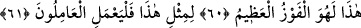

olmasaydı, şimdi ben de (cehenneme) getirilenlerden olurdum» dedi.
«Yemin ederim ki, sen az daha beni de helâk edecektin. Rabbimin” hidâyet ve ismet
“nimeti olmasaydı, şimdi ben de (cehenneme) getirilenlerden olurdum» dedi.”
Keşfü’l-esrâr’da der ki: “__WORD__ kelimesi yalnız şer ve kötülükte kullanılır. et-
Te’vîlâtü’n-Necmiyye’de ise şöyle der: “Allah Teâlâ’nın bana hidâyet, ismet ve koruma
nimeti olmasaydı bidâyette (dünya) dalâlet ve sapıklıkta ve yine nihâyette (âhiret) de
sizin içinde bulunduğunuz azap ve uzaklıkta olurdum.”
Allah Teâlâ henüz vukû bulup yaşanmadan bu hususu bize haber vermekle şunu
bildirmek istemiştir: Allah katında eşyanın gaybeti yahut huzurda olması eşittir. Eşyanın
huzurda olması Allah’ın ilminde bir artış sağlamadığı gibi, gaybeti de onun ilminden bir
şeyi eksiltmez. Eşyanın varlığı (vücûd) ve yokluğu (adem), Allah katında eşittir. Hatta
yok olanlar (ma’dûm) bile Allah’ın ilminde mevcuttur.
Zerrenin ilmi bile O’na gizli değildir
Gizli ve aşikar O’nun katında birdir
58, 59, 60, 61. Birinci ölümümüz hariç, bir daha biz ölmeyecek ve bir daha azap
görmeyecek değil miyiz? Şüphesiz bu, büyük kurtuluştur. Çalışanlar, böylesi bir
kurtuluş için çalışsın.
Dünyada olan “Birinci ölümümüz hariç, bir daha biz ölmeyecek ve bir daha azap
görmeyecek değil miyiz?” Cennet ehli olan bu kimse, arkadaşıyla olan sözü
tamamlayınca daimi ve ebedi nimetlere ve Allah Teâlâ’nın yüce fazıl ve keremine
sevinerek meclis arkadaşlarıyla bir söyleşi yapmak için onlara döner. Zira cennette
ebedi kalışı yâd etmek ayrıca büyük bir zevk ve lezzettir. Âyetin başındaki “أ” (hemze)
takrir içindir ve içerisinde hayret mânâsı da vardır. “__WORD__” ise kelamın nazmı gereği
mukadder
bir
söze
atıf
içindir.
Kelamın
takdiri
şu
şekildedir:
“__WORD__ şeklindedir. Yani biz cennette ebedi kalacak hep nimetler
içinde olacak ve artık hiç ölmeyeceğiz değil mi? demektir.
“Birinci ölümümüz hariç bir daha biz ölmeyecek değilmiyiz?” Bu ölüm, kabir suali
için kabirde diriltildikten sonraki ölüme de şâmildir. Kişi bu sözü, Allah Teâlâ’nın “İlk
tattıkları ölüm dışında, orada artık ölüm tatmazlar. Ve Allah onları cehennem
azâbından korumuştur (sürekli hayata kavuşmuşlardır).” (ed-Duhân 44/56) kavlini
tasdik mahiyetinde söylemiştir. Yani biz dünyadaki ölümümüzden başka artık cennette
ebediyyen ölmeyeceğiz, demektir. Burada “__WORD__ kelimesi, “__WORD__ kelimesinden dolayı
meful ve müstesna olarak mensuptur.